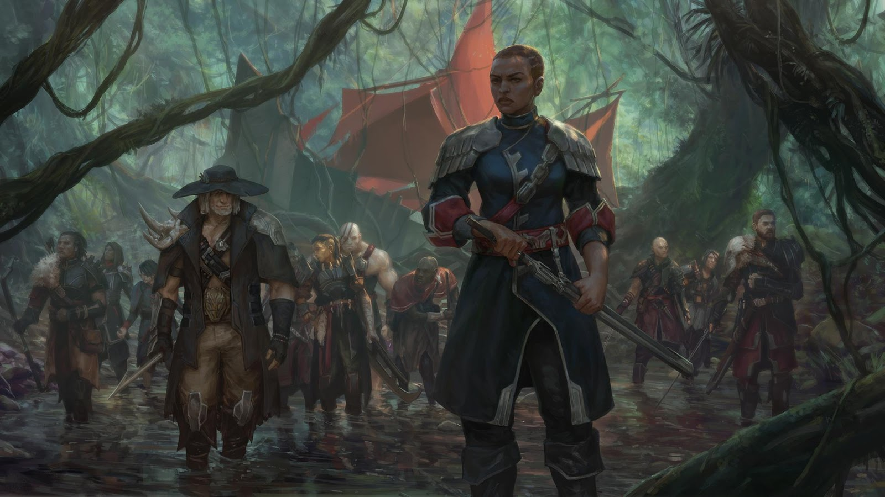
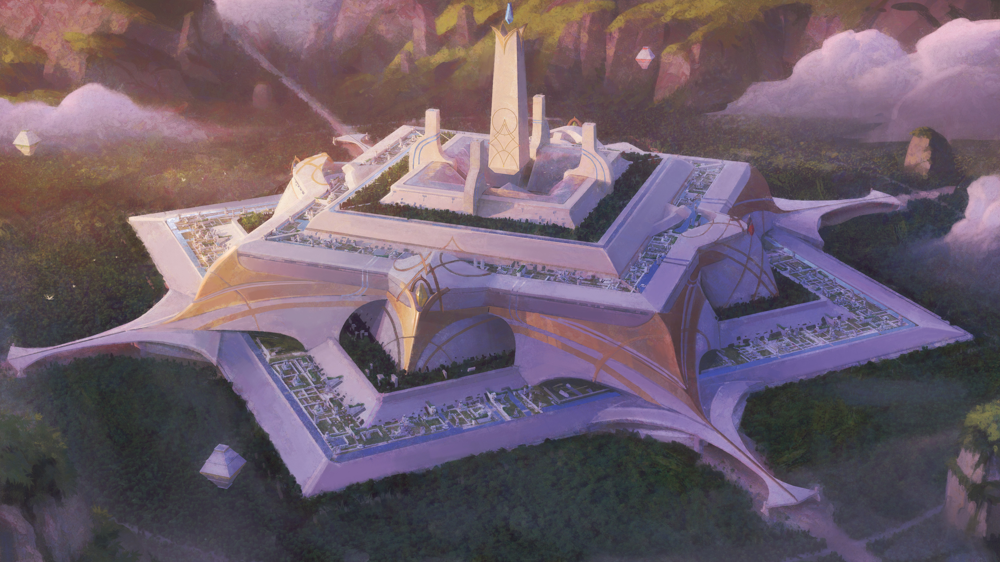
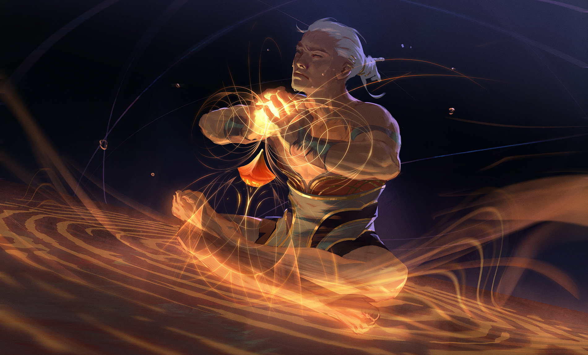
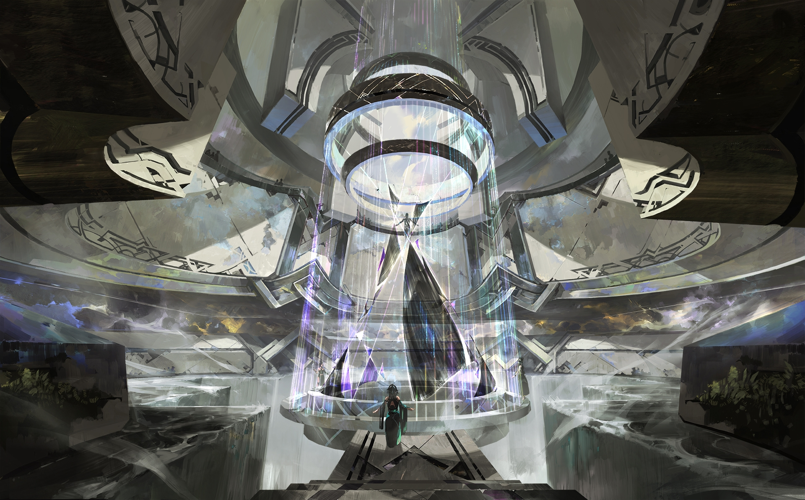
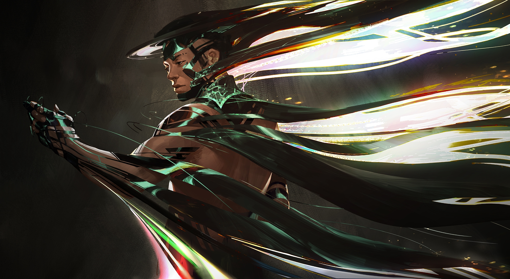
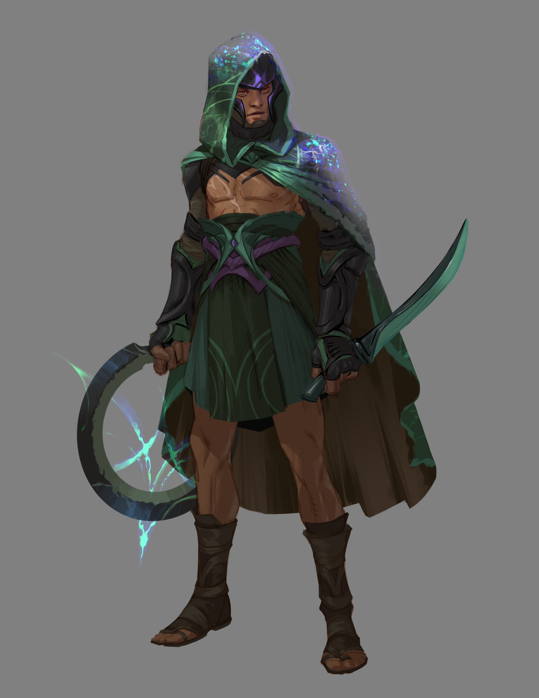
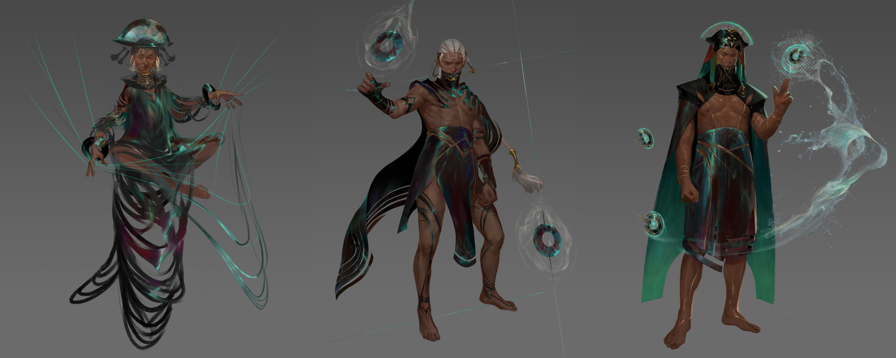
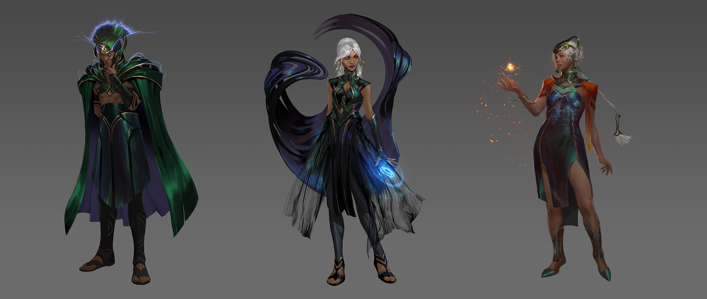
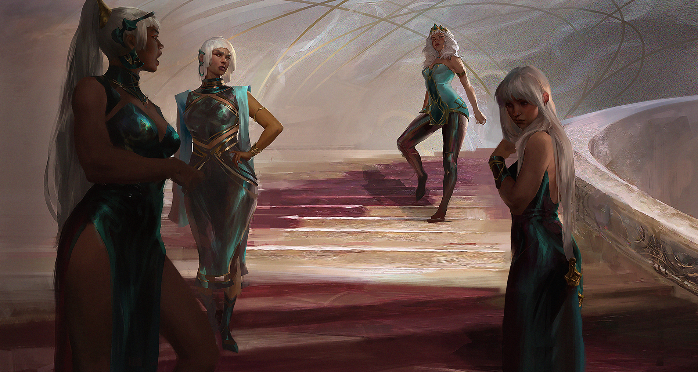

Renowned for its mastery of elemental magic, Ixtal was one of the first independent nations to join the Shuriman empire. In truth, Ixtali culture is much older—part of the great westward diaspora that gave rise to civilizations including the Buhru, magnificent Helia, and the ascetics of Targon—and it is likely they played a significant role in the creation of the first Ascended.
But the mages of Ixtal survived the Void, and later the Darkin, by distancing themselves from their neighbors, drawing the wilderness around them like a shield. While much had already been lost, they were committed to the preservation of what little remained…
Now, secluded deep in the jungle for thousands of years, the sophisticated arcology-city of Ixaocan remains mostly free of outside influence. Having witnessed from afar the ruination of the Blessed Isles and the Rune Wars that followed, the Ixtali view all the other factions of Runeterra as upstarts and pretenders, and use their powerful magic to keep any intruders at bay.
Image Gallery

Very little is known of Ixtal’s history by those outside its borders. Indeed, over the years, countless expeditions—from Noxus, Bilgewater, and more recently the Piltover Explorers Guild—have delved into the jungle in search of arcane treasures or new territorial claims... only to vanish without a trace.

In truth, Ixtal is not the uninhabited wilderness many imagine. Far from prying eyes and greedy hands, the sprawling arcologies of Ixaocan remain safely hidden by the deepest rainforests. The cardinal arcology, seat of the ruling Yun Tal caste, has stood since before the ancient Shurimans raised their first Sun Disc.
The arcologies are connected by intersecting lines of power, and each represents a specific form or discipline of elemental magic. The largest are home to tens of thousands of Ixtali practitioners, with a social hierarchy based on the length of time spent in study, furthering their progression toward ultimate mastery.
The further one travels from the cardinal arcology, the more specialized and prestigious the masteries become. High in the mountains, the mages of this relatively small arcology combine their understandings of fire, rock, and magnetism to draw precious metals from the earth, crafting them into exquisite shapes with the merest gesture.
Curiously, the abandoned ruins scattered throughout Ixtal are home to a surprising number of dragons. These terrifying creatures have not fought alongside mortals since the last days of Shurima’s war against the Void—now, for the most part, they seem content just to be left alone.

To the people of Ixtal, the world is merely a vast confluence of material forces, which they alone are capable of mastering. Each and every permutation of elemental magic—from the most simple to the most complex—is governed by a numbered Axiom, held almost sacred by the arcology that teaches it.

Within the cardinal arcology of Ixaocan is a grand chamber, deliberately positioned at the very center of Ixtal... and indeed the whole of Runeterra, as far as the Ixtali are concerned. Above this chamber hangs the Vidalion, an ancient artifact that can weave magic into material form.

Upon acceptance into the ruling Yun Tal caste, an initiate will have their own magic woven around them by the Vidalion, creating shimmering garments that respond to the needs of the wearer. This confirms the status of a true elemental master, who will lead and teach others in turn.

Protected by magic and solitude, Ixtal needs no armies. The closest thing they have to professional soldiers are the path wardens of Ixaocan, who endlessly patrol the lines of power between arcologies, and are much respected for it.

For countless generations, Ixtal’s secrets have been preserved by their most gifted and wise elementalists. There are no formal criteria for admission to the Yun Tal, though aspirants can expect to be tested to the very limit of their abilities, and any approval must be unanimous among those present.

The most trusted Yun Tal may be designated as the prefects of outlying villages and settlements beyond Ixaocan, such as Ohmka, Xolen, or Paretha. Their duties include the resolution of local disputes, testing potential aspirants, and generally ensuring that the Ixtali people have as little interaction with outsiders as possible...

The current occupants of the high seat of the Yun Tal were blessed with ten daughters—respectfully referred to by many as “the Yunalai”. Having the benefit of generations of inherited mastery, it is little surprise that all of them were ready to face the Vidalion at prodigiously young ages.